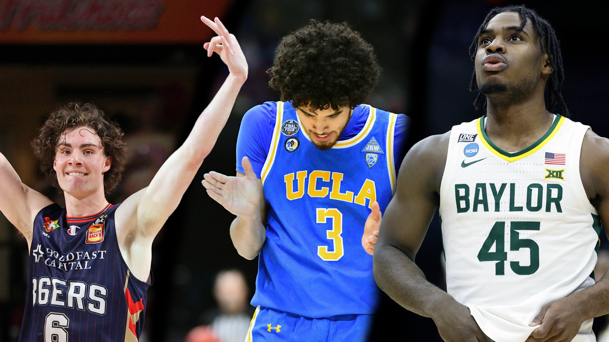

2021 NBA draft stock: who is on the rise?
With the draft fast approaching, it’s time to check in on some high-flyers rocketing up draft boards. Sean Carroll Illustration
The traditional big man is a dying breed in the modern NBA. If you’re not Nikola Jokic, Joel Embiid, Anthony Davis or Rudy Gobert, the impact bigs can have on an NBA game is limited.
As the NBA hits the final stretch of the 2020–21 season, bottom tier teams who aren’t making the playoffs look to finish up their remaining schedule and begin to calculate which talented young prospect they might nab in the coming draft.
The lottery is slated for June 22 while the draft itself is on July 29. This year, the combine week — which is a good opportunity for players to create some buzz — is scheduled for June 21–27, so there is still a tonne of time for movement in the tiers of the draft ladder itself.
Teams who know their lottery fate are taking stock of potential players within their range and who would fit best in their culture, system and rotation. Recently there has been an influx of eligible players entering their name into the selection pool and with such a deep draft a lot of teams could come out with a talented young star.
With the college season finished in the U.S. (as well as the March Madness tournament in the back of our minds), and other overseas leagues wrapping up, let’s take a peek at three players whose stock has risen, or is on the rise, as of late.
Davion Mitchell — G — Baylor
Donovan Mitchell, oops sorry, I mean Davion Mitchell…common, the two could easily get confused for one another with their last name, relative size, style of play and the number 45…don’t hate on me, it could happen to anyone!
Anyways, Mitchell’s draft stock took a massive leap throughout his junior season. Last December, he was projected to go in the late second round and is now positioned to go in the early first around the ninth spot. This can mostly be attributed to his recent play in the March Madness Tournament which helped grab the eyes of NBA scouts and general managers.
The 22-year-old Mitchell spent two seasons at Baylor, three if you count the transfer year he had to sit out. During this last campaign, he averaged 14 points, three rebounds and five and a half assists per game. The 6’2” guard plays more like a 6’8” forward as he bullies opponents on both ends and takes control of situations in his relentless pursuit to win.
He was the de facto leader of the Baylor squad during their run to capture the NCAA championship; he would set the tone and the rest would follow. Mitchell swallowed all opposing guards that he was matched up with. The way he stalled Gonzaga’s Jalen Suggs (projected to go in the top five), Joel Ayayi and Andrew Nembhard during the championship game was the perfect display of his elite defensive fundamentals.
There is a certain NBA team that is temporarily located in Tampa at the moment and who have a veteran guard that will supposedly be pursued via sign-and-trade by the Philadelphia 76ers this coming offseason, per The Athletic’s Sam Amick. That Tampa bound team could be looking for a player such as Mitchell, who mimics the same play style as the aforementioned veteran and would slot in nicely alongside Fred VanVleet and Malachi Flynn.
Having said that, Mitchell still hasn’t officially entered the draft pool but with how much his stock has risen over the season, it would be difficult to turn down the chance to be selected in the top ten.
Josh Giddey — G — Adelaide 36ers
OK, this might be a bit of pandering to my lovely Aussie mates but in all honesty, 18-year-old Josh Giddey is the real deal and he’s ready to make the jump to the NBA.
The 6’8” guard spent this last season with the Adelaide 36ers in Australia and recently entered his name into the NBA draft and is projected to go in the early-to-mid first round.
Giddey had a stellar year with the 36ers as he averaged 11 points, seven assists and seven rebounds, and feels as though the National Basketball League (NBL) has prepared him enough to take the next step in his basketball journey.
“The 36ers have done a great job developing me and have put a lot of work into my game over the entire time I’ve been here,” Giddey told ESPN in a statement.
“My teammates and the coaching staff here in Adelaide have helped my game reach a new level, and that’s only given me more confidence that this is the right decision for me.”
The young man is an elite competitor and has a drive to showcase it out on the court during every possession. He makes the right play at the right time — can rifle a skip pass cross-court to an open shooter, slither into the lane off a screen and either dish off to the roll man or put up a little floater if the defender is sagging. And best not leave him open on the perimeter, as he can reliably knock down some shots from three-point land.
Giddey has a certain pizazz and craftiness on the court, along with his size and length, which makes him an intriguing prospect who could fit on a lot of teams, one of which is the New Orleans Pelicans, who are slated to pick at the 11th spot at this moment. With Lonzo Ball reportedly wanting in the range of $20 million per year for his next deal, Giddey could be an intriguing piece if they decide to go a cheaper route to fill one of their guard spots.
As of now, he is slated to go somewhere between the ten to 14 range and could possibly squeeze up to the eighth spot if a team wants to take a chance. Either way, whoever selects him will have a tantalising prospect with a good base of skills that could grow into a talented NBA player.
Johnny Juzang — G/F — UCLA
Johnny Juzang is another player, like Mitchell, whose stock has been on the climb after an incredible scoring run during the March Madness Tournament where he tallied 137 points in six games.
The 20-year-old is projected to go somewhere in the mid-first round of the draft and some sites, like NBADraft.net, even have him slated right behind the previously mentioned Giddey.
The UCLA product has had an interesting college career. He started as a solid recruit for the Kentucky Wildcats but saw limited playing time and decided to make a change and return to his hometown of Los Angeles to join the Bruins — and boy it was a good decision that paid out.
Juzang’s scoring output jumped from three points per game at Kentucky to 16 with UCLA while also chipping in four rebounds and two assists. The 6’7” sniper had shooting splits of 44 percent from the field, 35 percent from three and 88 percent from the free throw line.
He recently helped his UCLA Bruins to the Final Four of the NCAA tournament, where they ultimately lost to the Gonzaga Bulldogs on a Jalen Suggs game-winning shot at the buzzer in overtime. Did you see who hit the clutch shot to tie the game before Suggs’ heave though? Yeah, that was Juzang. He was hitting pressurised shots like that throughout the tournament and season overall.
The guy was automatic with his jump shot — a literal shooting machine and when he put up a shot it was more than likely going in. That is the enticing part that NBA teams and scouts see in Juzang,
The California native recently stated his decision to declare for the NBA draft but said he will retain the option to return to college. Smart move by Juzang, as he can wait to feel out where he sits amongst the other top prospects, especially during the combine — if he decides to participate.
If the Bruin does decide to forgo his final years of college eligibility and pursue the NBA dream, he would be a solid pick-up on an NBA roster. A team such as the San Antonio Spurs (who select in the mid-first round) would be a good fit for Juzang, especially with all the off-ball screening action they use for their shooters.
NBA teams always need marksmen of Juzang’s prowess and with his recent outburst on the centre stage of college hoops, he might need to take the chance to join the golden tier of basketball leagues.